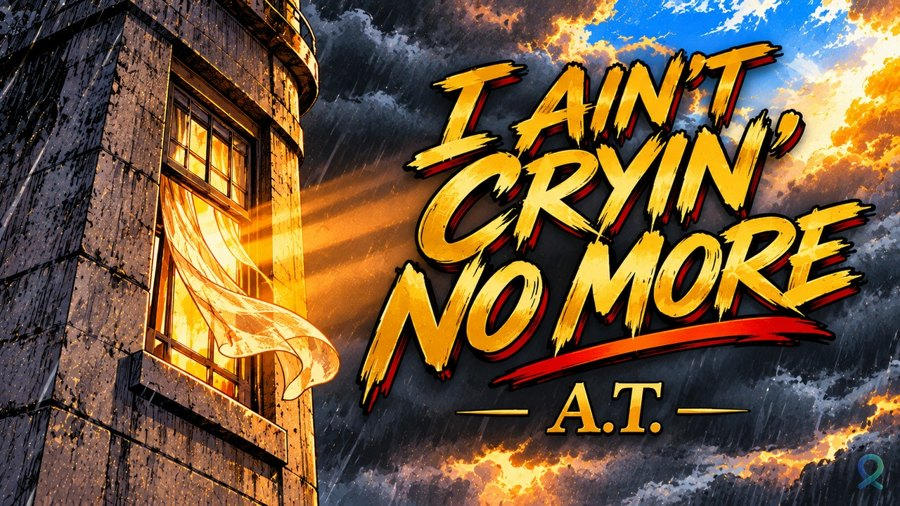

Track 10 · My Turn
I Ain't Cryin' No More
Seven years of rain, and she never knew it was a shield. One email from the desert and the whole story turns over: the car on Broad Street, the run through the Ironbound, the empty seat, the half scholarship, the oath, the red clay at Benning. He was protecting her the whole time. Now the bags go back to the store, the girls get the call, the radio comes back on, the notebook fills up, and every night at midnight she prays him home. The clouds roll back off Brooklyn. The window stays open.
 Watch the official video
Watch the official video
Lyrics
[Intro]
Mm... yeah
Window open
I can breathe again
[Hook]
I ain't cryin' no more, I ain't cryin' no more (ooh)
The clouds rolled back off of Brooklyn and the sun came through the door (mm)
Everything I thought I knew, you was protectin' me before (ooh)
I can breathe again, baby, I ain't cryin' no more (no more)
(No more) I ain't cryin' no more (ooh)
(No more) Come home safe to me, that's all I'm prayin' for (mm, yeah)
[Verse 1]
Read it twice at the desk, then I read it again
Old gray tower hummin' like it's holdin' it in
Car creepin' up on Broad, five jumped out the door
You ran clear to the Ironbound, you never told me before
Over the fence, on the tracks, with the letter in your hand
While I was singin' to a seat thinkin' I ain't in your plans
You told the lie to keep 'em off of my block
Took the blame for the seat, let me think that you stopped
Half a scholarship, your pride wouldn't let you say it
Couldn't pay the other half and you ain't want me to pay it
So you raised your right hand, Benning in the red clay
Every year I hated you, you was keepin' me safe
Mama heard me up at two, but it wasn't a sob
First time in years she heard me laugh, she said "thank God"
Seven years of rain and I ain't know it was a shield
Now the sky over Brooklyn and my heart finally healed
[Hook]
I ain't cryin' no more, I ain't cryin' no more (ooh)
The clouds rolled back off of Brooklyn and the sun came through the door (mm)
Everything I thought I knew, you was protectin' me before (ooh)
I can breathe again, baby, I ain't cryin' no more (no more)
(No more) I ain't cryin' no more (ooh)
(No more) Come home safe to me, that's all I'm prayin' for (mm, yeah)
[Verse 2]
Bags in the corner and the tags still on 'em
Boxes full of heels and I ain't never stood in 'em
Paris to Milan, I was runnin' from the ache
Retail therapy, every swipe was a mistake
VIP on a Tuesday, bottles that I didn't drink
Smilin' in the flash so I ain't never have to think
Now I'm packin' it away, every bag back to the store
Ain't no receipt for what I'm healin', I don't need it no more
Called my girls on three way like the summer back then
"He ain't leave me, y'all, he was savin' me again"
One of 'em started cryin', one said "I knew it was deep"
One said "Now maybe you can finally get some sleep"
Turned my phone face down, turned the radio on
First time in years I sang along to a song
Opened up my notebook and the pen ain't fightin' me now
Every page I been sittin' on is comin' out loud
[Hook]
I ain't cryin' no more, I ain't cryin' no more (ooh)
The clouds rolled back off of Brooklyn and the sun came through the door (mm)
Everything I thought I knew, you was protectin' me before (ooh)
I can breathe again, baby, I ain't cryin' no more (no more)
(No more) I ain't cryin' no more (ooh)
(No more) Come home safe to me, that's all I'm prayin' for (mm, yeah)
[Bridge]
Lord, keep him covered where the desert gets cold
Keep my picture in his helmet, keep his feet on the road
He was guardin' me back then when I ain't even know
Now I'm guardin' him with every prayer, so bring him home
[Verse 3]
Every night around midnight I'm back at the gray screen
Thirty minute window, that's the closest we been
He say the sand in everything, the heat like a stove
He say my picture in his helmet keep him knowin' where to go
He say when he get home he gon' finish his degree
GI Bill gon' cover what the scholarship couldn't be
Exercise science, he gon' walk across the stage
And I'ma be front row, that's a promise on the page
Funny how it turned, I saved a seat that stayed bare
Now I'm savin' him the front row and I'ma really be there
I ain't mad at the past, I just pray about the war
Every truck on that road, Lord, bring him back to my door
Put the cards in the drawer, put the bottles on the shelf
Took a breath on the stoop and I ain't hold it for myself
Dark cloud gone, Brooklyn sky blue as it get
And the window still open, I ain't closed it yet
[Final Hook]
I ain't cryin' no more, I ain't cryin' no more (ooh)
The clouds rolled back off of Brooklyn and the sun came through the door (mm)
Everything I thought I knew, you was protectin' me before (ooh)
I can breathe again, baby, I ain't cryin' no more (no more)
(No more) I ain't cryin' no more (ooh)
(No more) Just come home safe to me, that's all I'm prayin' for (ooh, I can breathe)
[Outro]
I ain't cryin' no more...
Window's open, Twenty Three.
Mm. I can breathe.
Written by Grey Beard and A.T. ℗ & © 2026 Threadia AI, Inc. All rights reserved.